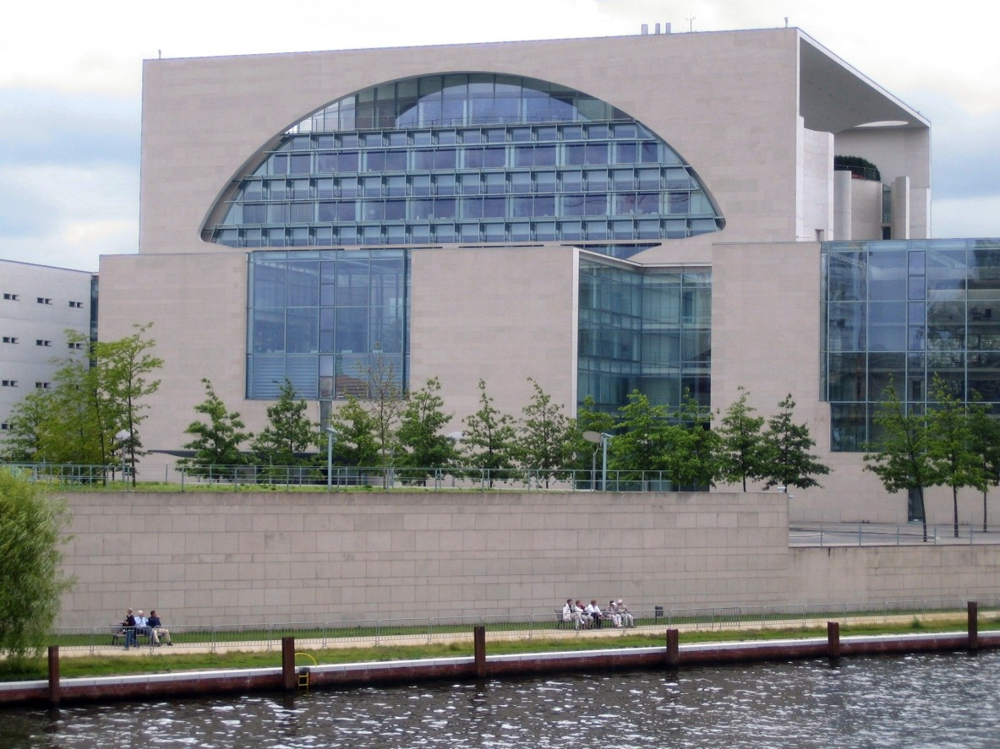

포스트 모더니즘
탈근대주의 또는 포스트모더니즘(postmodernism)은 일반적으로 근대주의로부터 벗어나고자 하는 서양의 사회, 문화, 예술의 총체적 운동을 일컫는다.
특히 근대주의의 핵심인 이성(理性) 중심주의에 대한 근본적인 회의를 내포하고 있는 사상적 경향의 총칭이다.

포스트 모더니즘 건축물의 특징
- 1.포스트모더니즘 건축은 건축의 다양한 가능성을 찾아내어 이를 수용함으로써 새로운 형태를 구성하고자 했다.
- 2.또한 모더니즘 건축에서 철저히 배제되었던 지역적·역사적 장식들을 건축 디자인에 다시 적용하고,
건축의 상징성·장식성·대중성을 회복하고자 하였다.